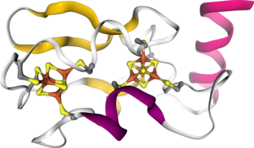

[name]

NGL is an on-line viewer for proteins and other molecular structures. It is intended for users of the web application including a graphical interface and for developers who want to use NGL in their own projects. Have a look at the [page:Gallery gallery] for a quick overview of the visualization capabilities NGL offers. On the right, the secondary structure (cartoon representations) of ferredoxin (PDB entry 1BLU) is depicted and the two [4Fe-4S] clusters are highlighted (HyperBall representation).
Users
NGL provides a web application with an efficient graphical user interface (GUI) for performing common visualization tasks. A comprehensive set of [page:Molecular-representations molecular representations] is available to create complex molecular views. Based on the WebGL technology, NGL requires only a modern web-browser, which is described in more detail [page:Browser here].
Developers
The NGL web application can be [page:Installation installed locally] or on a dedicated [page:Webserver web-server]. Moreover, the NGL viewer can be embedded within other web-pages and controlled via a JavaScript API.